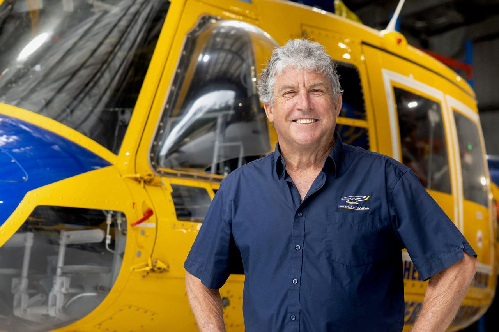
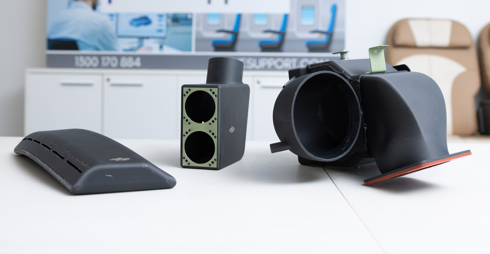
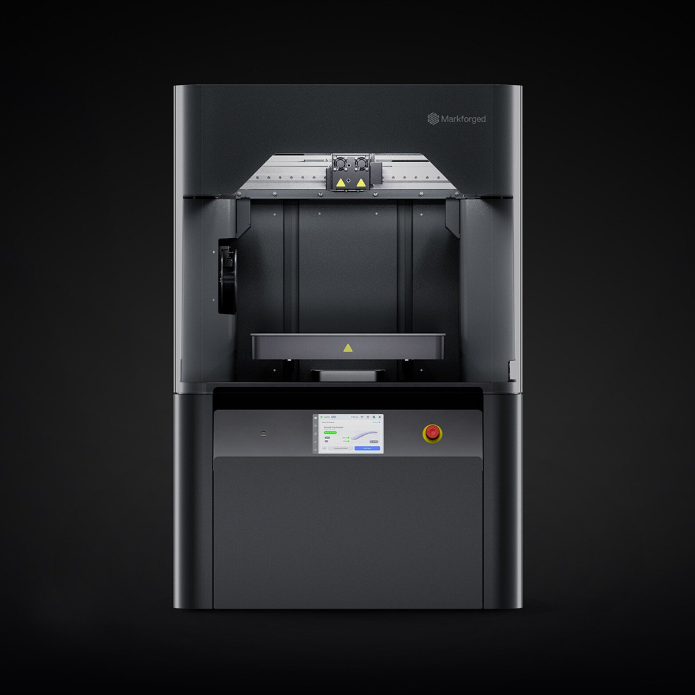
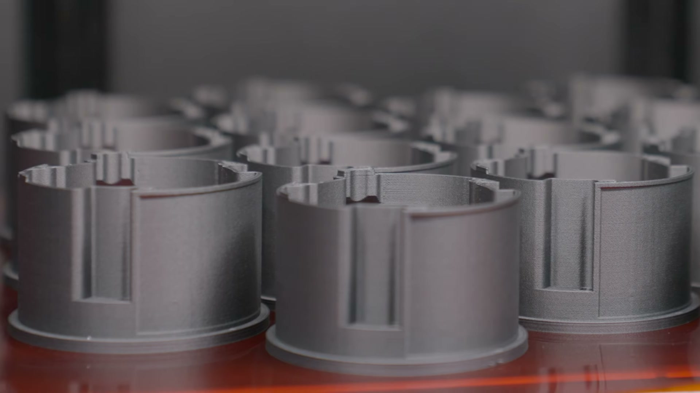

News & Insights

civil aviation additive approval
The project was initiated by fleet operator McDermott Aviation; the two companies spent almost two years on it, in close consultation with CASA throughout. It is the first publicly citable case in Asia-Pacific in which a civil aviation authority has formally accepted a parts manufacturing process built around 3D printing.
“An aircraft waiting on a component you can't easily get hold of is an aircraft that isn't working.”
John McDermott · Founder & President, McDermott Aviation (from the public release of 12 October 2026)Origin
An out-of-production type, and the world's largest fleet of it
McDermott Aviation is Australia's largest privately owned helicopter operator, headquartered on Queensland's Sunshine Coast and operating the world's largest collection of Bell 214 series aircraft — 15 × 214B and 14 × 214ST — flying aerial firefighting, heavy lifting, agricultural spraying, infrastructure support and emergency response, with bases across New South Wales, Western Australia, Papua New Guinea and New Caledonia.
The Bell 214B is no longer in production. The larger the fleet, the more direct the cost of a component you cannot source: some parts are difficult to obtain through existing supply channels, and a part you cannot find is an aircraft sitting in the hangar.
The responsibility has nowhere else to go either. McDermott holds the Type Certificate for both the 214B and the 214ST — long-term support for the type rests with the operator itself. The company is currently preparing to commence production of its modified Utility 214ST.

Process
Two years, most of it spent proving it
The technical path is straightforward enough to describe: Plane Support used 3D scanning to capture the original ducting and build accurate digital models, then reverse engineered and redesigned the parts for additive manufacturing while retaining their original form, fit and function.
What took the time was everything after that. The company established a dedicated aerospace additive manufacturing laboratory for the project, built around a Markforged FX10 industrial printing platform; alongside the equipment it had to develop the quality systems, production controls and inspection methods — and evidence every one of them to CASA, item by item.
Local technical support came from Invenio 3D, Markforged's Australian reseller partner, which issued its own release on 13 October setting out its role in the project.
Markforged's official release and customer case study of 28 October add the technical detail: reverse-engineering the complex internal duct geometry required strict structural verification, so the engineering team used Markforged Simulation to analyse and optimise part performance before printing; the final ducting is printed in Onyx FR-A.
“Ducting sounds simple until you try to reproduce it. These are complex shapes that have to fit exactly and perform in the aircraft just as the originals do, and we had to prove every step of that to CASA.”
Jason Hazell · Director of Engineering, Plane Support (from the public release of 12 October 2026)Hazell also noted that the team had no established process to follow, so it developed its own procedures, quality systems and inspection methods and worked them through with CASA — groundwork that now gives the company a pathway for other components and other aircraft types.

Scope
The approval covers the manufacturer, not the machine
The scope of this approval is worth stating plainly, because it is easily simplified in the market.
APMA applies to Plane Support as the parts manufacturer, and to the manufacturing solution for that specific part — who makes it, what they make, and by what process. It also expands the company's existing CASA Part 21K additive manufacturing capability. Plane Support additionally holds Part 21G and Part 145 approvals and operates an AS9100 quality management system.
It is not an airworthiness endorsement of any printer brand. The Markforged FX10 is the platform used within the approved process; the precise formulation is “a process built around the Markforged FX10, approved by CASA under APMA”.
That distinction determines directly how others can replicate it: what you need to prepare is not a “certified” machine, but a body of evidence that holds.
Significance
What the region lacks is not equipment, but a record of having done it once
Aerospace companies across Asia-Pacific are generally not short of equipment or engineering talent; additive manufacturing has long been routine for fixtures, tooling and prototypes. What has been missing is a precedent in which the full airworthiness case was made for a process built around additive manufacturing — and can be cited publicly.
Frameworks for parts manufacturer approval of the PMA type exist in civil aviation regulation everywhere. The difference lies in the first time: procedures, quality systems and inspection methods must all be built from nothing, and that work cannot be outsourced to an equipment vendor. The Plane Support case demonstrates that the barrier sits in procedure and inspection rather than in printing — and that once the path has been walked, it becomes a reusable qualification asset.
Three things that travel
Material provenance, in-house inspection, validation moved upstream
Material lot traceability. Onyx FR-A is Markforged's aerospace-grade, flame-retardant, micro-carbon-fibre-filled nylon. Markforged's official case study notes that it provides complete lot-level material traceability — the documentation and repeatability airworthiness frameworks require. FR-A addresses the cabin flammability requirements of FAA 14 CFR 25.853 and is NCAMP-qualified on the X7; the FX10 runs the same material.
Inspection methods built in-house. With no precedent to follow, Plane Support established the procedures, quality controls and non-destructive inspection methods required under CASA Part 21K from the ground up, proving to CASA that industrial composite additive manufacturing can consistently meet aviation safety standards. That procedure set belongs to Plane Support — and is its route to other parts and other aircraft types.
Validation moved upstream. Before printing, the team used Markforged Simulation to analyse and optimise part performance — simulating strength and stiffness inside Eiger, predicting deformation under load and auto-configuring print settings.
“This milestone from Plane Support and McDermott Aviation marks a defining moment for additive manufacturing across the global aerospace sector. By pairing the industrial precision of the FX10 with the predictive power of Markforged Simulation and the lot-level traceability of our aerospace-grade Onyx FR-A, they have addressed a critical supply bottleneck head-on. They have proven that flight-ready, fully certified composite components can be produced predictably and locally to keep mission-critical aircraft in the air.”
Richard Elving · Head of Sales - APAC, Markforged (from the Markforged customer case study of 28 October 2026)

Markforged Simulation is a module of Digital Forge Complete (DFC) Advanced; it is not bundled with the printer, and the On-Prem (air-gapped) configuration differs in scope. Confirm plan tier and printer support before deployment.
Sequence
The first part is the hard one; after that it is reuse
The sequence of this project is worth noting: McDermott did not start looking for a solution once aircraft were grounded, and Plane Support did not build its quality systems once an order was in hand. Work that began two years ago became, on 12 October, an approval that can be used again and again.
Companies in this story
Logos are taken from the joint press release issued by Plane Support, Invenio 3D and Markforged on 13 October 2026. All trademarks and related rights remain with their respective owners; they appear here only to identify the parties involved.
Full case report (A4 · 7 pages)
The complete write-up of this case: scope of the approval, technical path, material traceability and inspection, and Markforged's existing record in certified civil aviation parts. Available in three languages.
Airworthiness adoption assessment for aerospace parts
A feasibility assessment by the Markforged engineering team against your actual parts and acceptance criteria, with hands-on demonstration available. Sessions can be arranged in Taiwan, China, Hong Kong or Vietnam.
Get in touchSources
- Markforged official release of 28 October 2026, “Markforged Technology Powers Milestone CASA Approval for Flight-Ready 3D-Printed Components on Heavy-Lift Firefighting Helicopters”; material, Simulation and reseller role are taken from it
https://markforged.com/resources/news-events/casa-approval-for-flight-ready-3d-printed-components - Markforged customer case study: Plane Support (October 2026); the Richard Elving quotation is taken from it
https://web-objects.markforged.com/craft/common/Markforged_Plane-Support.pdf - Joint public release issued by Plane Support and McDermott Aviation on 12 October 2026; fleet figures, regulatory framework, timelines and the two executives' quotations are taken from it
https://aerialfiremag.com/2026/10/12/plane-support-gains-casa-approval-for-3d-printed-214b-helicopter-parts/ - Plane Support (CASA Part 21K / 21G / 145 approvals, AS9100 quality management system)
https://www.planesupport.com/ - McDermott Aviation (Type Certificate holder for the Bell 214B and 214ST)
https://www.mcdermottaviation.com/ - The regulatory mapping of Onyx FR-A and the description of the Simulation module are taken from Markforged official product and software materials
https://markforged.com/simulation - Press release issued by Invenio 3D on 13 October 2026 (Invenio Simuserv / Plane Support), setting out its role as additive manufacturing technology partner on this project
https://www.invenio3d.com.au/ - People and part photographs are taken from the Markforged official release (Photo credit: Plane Support); copyright rests with Plane Support / McDermott Aviation. Product photography is Markforged official material
Prepared by the Markforged Greater China & Vietnam team.
Back to Newsroom · www.markforged.tw